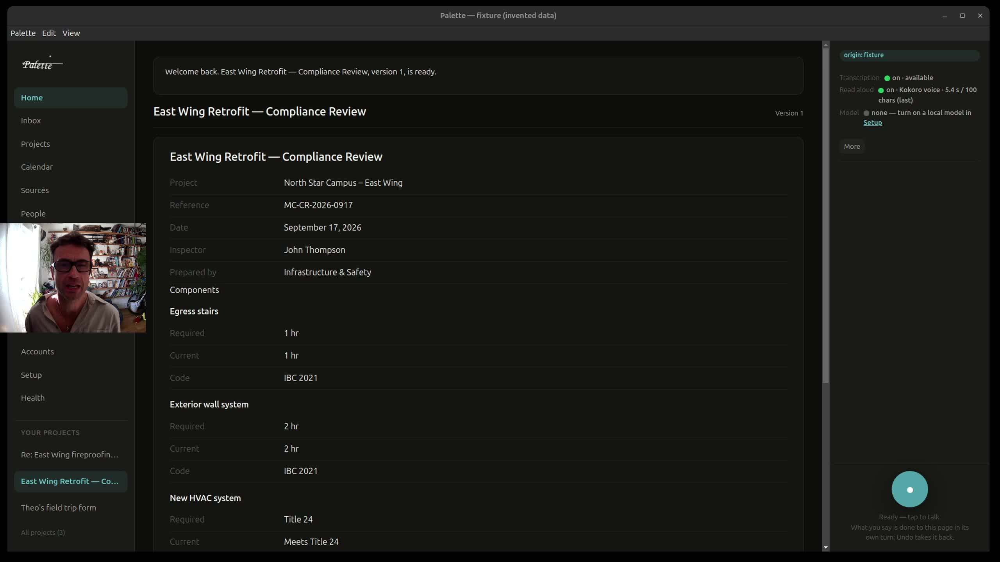

For the businesses that can't send their data to the cloud, and for everyone who shouldn't have to.
Mical Neill, CEO · Jason Covington, COO · San Francisco · November 2026
Healthcare, legal, finance and construction want AI on their real work. They can't send client files, patient records or financials to a cloud model, or prove where that data went once a model has seen it. So the work that would benefit most stays manual.
People are told to hand over their personal data, pay a monthly subscription and learn to prompt. That shuts out the people who could gain the most: communities that can't afford cloud AI, elderly people, and anyone who just wants straightforward tasks done privately.
Every request is classified before any model sees it. Sensitive work stays local. Every answer comes with a receipt showing what was used, what was blocked and what left.
Customers get Palette, the app every employee installs, plus a Studio of ready-built apps for their field. Classifying first is built in, not a setting, and it's patent-pending.

The work runs on hardware the customer already owns, so our cost doesn't rise as they use it more.
Job site, office and fleet in one system. Delivery tickets read by AI, pour logs and safety declarations to code, fleet and fuel by machine and job. Runs every day at an Italian construction firm.
A regional public health authority in Italy uses it to prioritize emergency-room patients, with patient data kept where it belongs.
AI agents that answer the phone and WhatsApp, book, reschedule and follow up, with caller verification. Born in clinics.
Since July 2026, 15 paying customers have brought in $108,359 in revenue, and our largest is on a recurring monthly contract.
For the first time, a business can use good AI without sending its data anywhere. A new class of AI computers ships with chips built for it.
Privacy is the top reason companies hold back on AI, and regulation is tightening, including the EU AI Act.
Companies will decide how they use AI in the next year or two. Our solution is built, it ships today, and customers already run their work on it.
Easiest to start; the work runs on the vendor's computers.
Data stays local; someone technical has to assemble and run it.
Good at predictable steps; they stop where judgment and context begin.
Industry specialists, and integrators who start from zero for every client, so each project is slow and expensive.
A nontechnical team in a regulated business gets real work done on its own machines, without maintaining an AI stack. Every request is classified before any model sees it, every answer shows its sources, a correction changes the next draft, and nothing goes out unless the right person has authorized it.
A company hiring several AI governance roles at once is about to build something like Mission Canvas itself. We watch job postings; that produced our second enterprise proposal in three weeks, and it now runs every day.
IT providers, compliance consultancies and software platforms each bring many customers per deal.
New AI computers ship with powerful chips but little software for work. With Palette and a Studio pre-installed, each becomes a governed AI workstation on day one.
Today every company bends its work around apps someone else designed. Palette works the other way. It reads what the customer already has (documents, email, calendar, Slack, Jira) and builds exactly the interface they need, in real time.
Ask for a weekly client report, a permit checklist or a board update, and Palette creates it from their own material and keeps it current as the work changes. Customers change it themselves, without writing code or learning to prompt, under the same rule as today: checked before any model sees it, nothing leaves without permission.
A self-serve install anyone can finish alone, sold directly to professionals.
Our four provisional patents converted into full applications.
Close our priced US proposals, sign our first US channel partner, and bring Livella to US contractors.
And we measure weekly active users and governed requests for every Studio, so growth shows week by week.
Designed the knowledge architecture behind Alexa's first conversational agents for restaurant booking and Ticketmaster: 13 locales, 47 data providers, a 25-billion-node knowledge graph. Owned the Italian, French and Spanish launches. Designed Ask Pathfinder at AWS, used by 12,000+ sellers a month. Comparative linguist.
25 years leading product and transformation inside regulated Fortune 500 companies: Microsoft, Genentech, Kaiser Permanente, Boeing. At Genentech, three programs that cut audit and compliance costs by about half.
We build lean: a team of 3 to 11 contract AI engineers, and teams of AI agents working under the same governance we sell.
We are raising now. For terms, write to mical.neill@missioncanvas.ai.
The money goes to the plan for May: Palette as a paid product with a self-serve install, our patents converted into full applications, and Livella for US contractors.
Regulated work is where we prove it. Everyone else is where it grows.
Mical Neill · mical.neill@missioncanvas.ai
Jason Covington · jason.covington@missioncanvas.ai
missioncanvas.ai